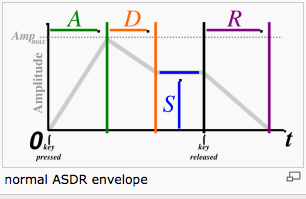

Mod2Vectrex
First!
Let me start by saying that although I am an old Amiga - guy, I have never been one who was much interested in sound, or playing music. I know that the MOD-Format existed probably a short time after it first appeared and I can remember the labels on my ST-01 and ST-02 disk, but I never really did anything related to music.
That did not change!
All the brabbling below are things I found out the last couple of days while getting "Mod2Vectrex" integrated into VIDE. So please forgive me if I make any mistakes, just send me some words of correction and I'll keep on trying to do my best.
Thanks
My thanks at this place especially goes to the guys (and girls?) behind Nuance and Metalvotze who not only did great Vectrex demos, but also are refreshingly open in sharing their sourcecode. The original Pascal source to the coding behind my Mod2Vectrex class were programmed by "Fieser Wolf", thanks for sharing!
Start
Mod to vectrex conversion is not a trivial thing - at least if you want nice results.
Sure - you can read the "Notes" of a mod file and convert them to vectrex notes, but that alone will in most places not be sufficient.
There are significant differences in the way music is handled in the two formats:
←the orginal MOD has 4 voices (later versions can have even more than 4) [original: Karsten Obarski's Ultimate Soundtracker]
→vectrex only as 3 voices
←MODs play samples
→although vectrex can be brought to play samples, it is not its "natural" cause (unlike the good old Amiga), therefor vectrex will play generated sound after conversion (not samples)
←because MODs play samples there is no way to "auto-map" one instrument (sample) to a PSG setting (something instrument like), since every MOD can have different samples
→not all samples have a "fitting" counterpart in vectrex "instruments".
although vectrex can be brought to "sound like" one instrument or the other, the BIOS sound routines (which are used after conversion) do not allow different "instrument settings" to be used at the same time with different voices, the "ADSR" and "TWANG" settings are for all voices for one complete piece of music. Therefor:
In order to achieve conversion results which are at least somewhat pleasing, you as a user have to help!
You must tell which of the 4 voices are supposed to be matched to the three vectrex voices
You must tell which of the instruments(samples) of the MOD are mapped to what PSG settings [the vectrex mod-routines use (nearly) the BIOS sound playing routines]
(This might not be an easy task, since there are two stumbling blocks:
Mod writers often do not name their instruments very descriptive
You have to know how the vectrex sound routines work in order to find settings for "instruments")
I have tried to help in form of a nice little window with some features:
(The piece of music you see is the one from "lineart", which is VERY easy to convert!)
Mod2Vectrex
At the top of the panel you can see a cut down version of the IBXM ((c)2011 mumart@gmail.com) - player, with that you can play the to be processed MOD file and listen to it, and chose easily whether you like it or not.
Below that you see a table with information of the loaded mod:
the number of instruments
the original instrument names (samples) (which sometimes only contain "messages")
the size of the sample, which give you a first clue whether they are used at all
"used #", these are numbers of "usages" of the sample, first the sum, and after that each usage count for each voice
instrument of vectrex to be mapped to, this you have to edit, since the default vectrex name for any instrument is "silence!" (see also below: "noise" should be set to an instrument, "notes" to ... note)
the resulting vectrex byte with the current selected mapping ["note" is always represented with 0]
a double click on a table row "plays" that sample, so you know at least what that specific sample sounds like
Below that table there are some more settings.
First there are 12 radio buttons, with these you can set which of the 4 mod channels (voices) should be converted to what vectrex channel - here only testing helps!
Below that you see four numbers, these are the sums of notes played in each of the four channels. In the example provided you can see, that the first three mod-channels play over a thousand notes and the fourth channel only about a hundred. This so far seems to be a perfect candidate to be dropped out...
Below that you see four checkboxes which are per default all set to enabled. Each of the checkboxes represent a "play enabler" for IBXM. With these checkboxes you can turn on/off single voices while playing the original mod. This also enables you the chose which channel might be "drop-worthy".

ADSR
The last possible settings are the ADSR (Attack, Decay, Sustain, Release) and TWANG (Vibrato) tables. Although I have as yet not found an in depth explaination of how these are best configured... you CAN enable different instrument settings with these. The values displayed are a shameless copy of the lineart demo, but you can surely experiment with them!
Note:
Each pattern can have different ADSR and TWANG tables. The values you find here are used in ALL patterns. If you want to differentiate you have to change the generated sourcecode!
Note again:
The ADSR and TWANG values are copied to the source AS IS, if you put errors in there or supply the wrong count of values, strange sounds may occur!
... is on the bottom left. With these you can alter output settings. But this is more for historic reasons, if I were you I would always use "indirect output", that output is better readable and allows you through definitions to more easily change the resulting sources.

Mod2Vectrex-generated source
The resulting sourcecode is one asm file (+ example player) which contains all song data. The file has a few different "chapters":
adsr/twang table
as described above, these are just copied
play values
these are identical for every generated piece of music, only three values: SILENCE, NOISE, CONTINUE
instruments
a list of all instruments from the original mod and the resulting mapping for vectrex
notes
a list of all notes the vectrex can play for better readability (this is also always the same)
song values
the count of patterns to be played and a loop position (if available)
pattern playlist
a list of patterns which are to be played and in what order
pattern data
for each available pattern, a complete pattern data collection (in vectrex terms: one pattern is one piece of music. The data for one pattern is in exactly that vectrex music format!)
The resulting piece of vectrex music is nearly identical to a original Vectrex BIOS music piece, the only difference is, that the highest possible vectrex note (AS7, value $3f) is taken as the value for SILENCE instead of a note. This is the only reason why the original sound routines are copied to cartridge space, - to reflect that little change (5 lines of different assembler code)
Thus the handling, setting up etc of the music is the same as usual BIOS routine.
Each generates "pattern" is one piece of vectrex music. With very little overhead you can play the different patterns in the original mod order and thus play the complete mod (see examples).
"Notes"- format!
See Bruce Tomlins BIOS disassembly (→Library, address from $F687, "Init_Music_chk") (honestly, READ THAT), there the music format and note format is described. Most relevant for "mod conversion" is the differentiation between noise and notes. In order to play a drum, a hihat or bass or whatever other "noise" instrument you play, you set bit 6 ($40) of your note and achieve a noise result. The 3 (instrument-) values which are provided as a start, I have taken from lineart demo, and these noise instruments are:
bass drum
hihat drum
snare drum
The values for these are hardcoded in a combobox, to easily chose from. If you find other suitable values,
tell me!
edit the resulting asm file (if saved with "indirect output" option enabled allows changing and adding new values very easily)
Many a mod file can be found at:
http://modarchive.org/
or
http://amp.dascene.net/home.php